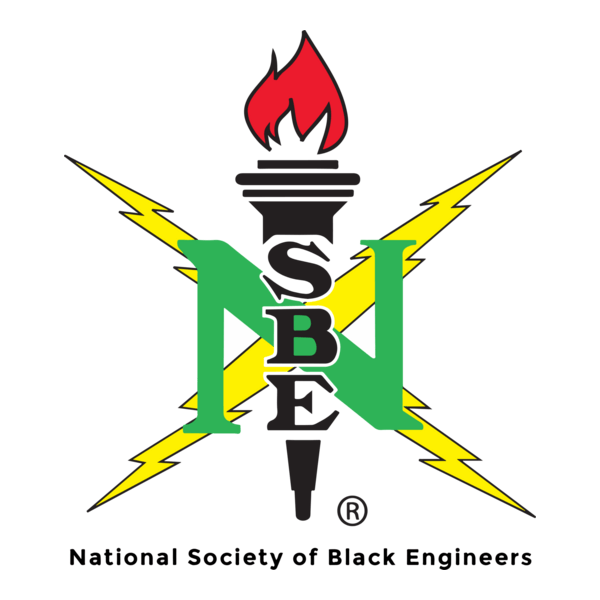
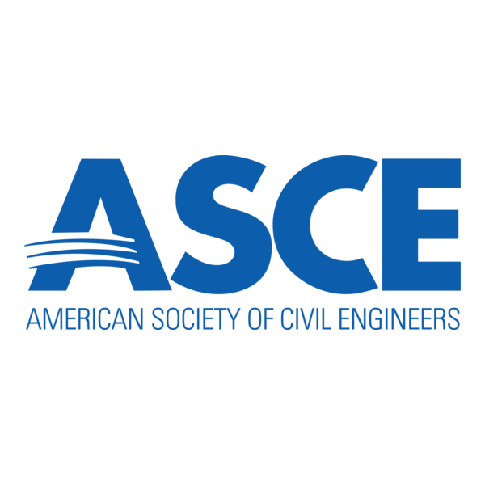
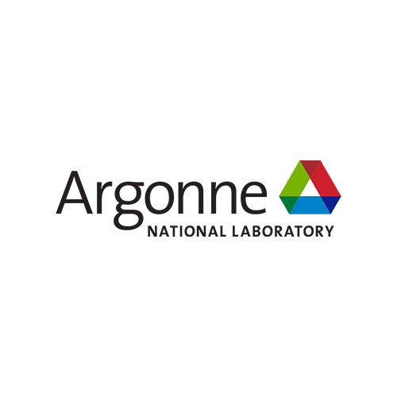
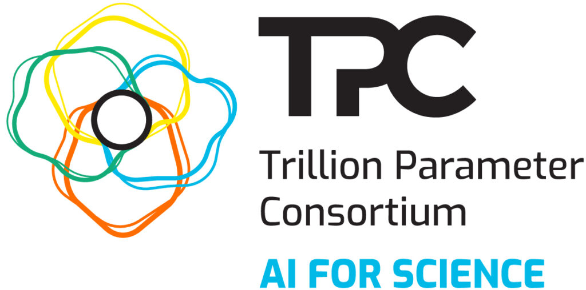

About Me
I am an AI researcher whose work spans multimodal vision-language models, scientific imaging, computer vision, and the development of intelligent systems that support real-world decision-making. My research focuses on building models that enhance understanding in science, engineering, and community resilience. I work at the intersection of data-driven learning and practical applications, creating methods that are both technically rigorous and meaningful to society.
I have conducted research at Argonne National Laboratory through two appointments in 2024 and 2025, where I contributed to projects involving multimodal models for scientific discovery and biomedical imaging. My work has also addressed post-disaster building damage assessment, urban resilience, sensor-driven flood monitoring, and AI approaches for low-data scientific environments.
Recognition & Impact
My research has been recognized by leading institutions and conferences in AI, engineering, and scientific computing:

'">
'">
'">
'">